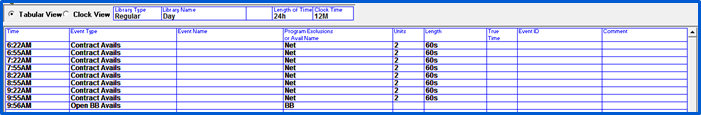
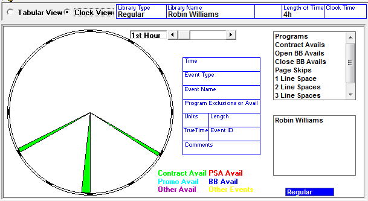
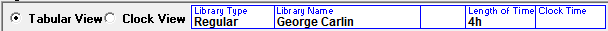
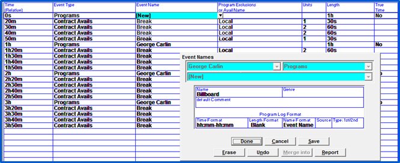
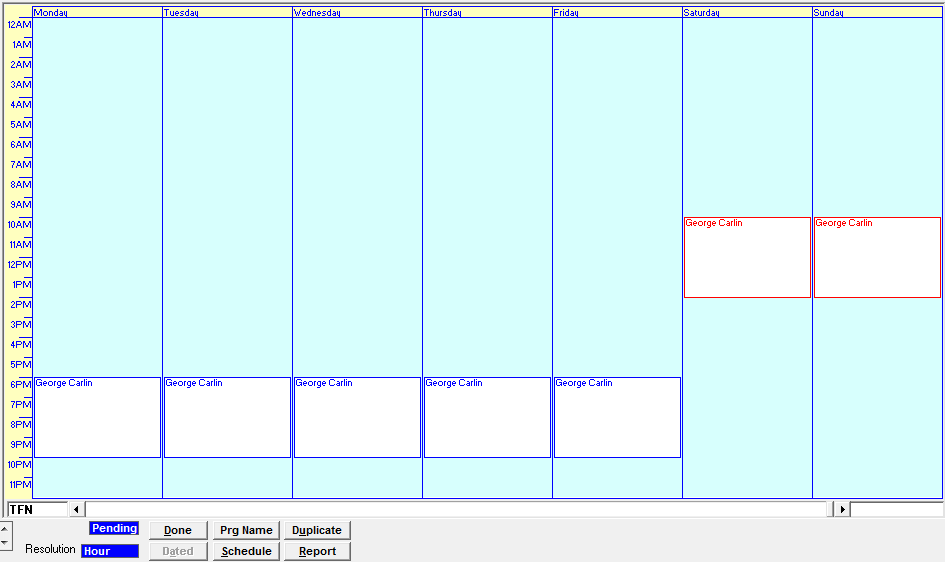
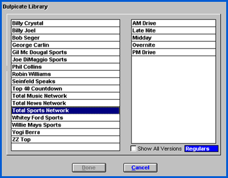
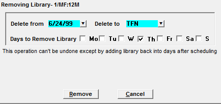

Defining a Library
There are two ways to access the Library Events screen to add a new library: Double click “New” in the Library Box, or select “New” and click “Define Library”.
The Library Events Screen
The Library Events Screen is where all elements are entered.
Library Types
- Regular is used for all libraries
- Special is used for those unique libraries that occur infrequently. Regular should be the only library used
- Sports is no longer used. Sports libraries are entered as Regular libraries and Event Schedules
- Standard Format is used to define all ‘standard’ hour, day’s etc. as a model for regular libraries. Regular should be the only library used
Library Views
The Library Screen is defaulted to the “tabular view”, which allows you to enter the inventory information on a grid as shown below.

The “clock view” allows you to view your inventory on a standard clock.

Header Information

- Library Type is should always be Regular
- Library Name is used to identify the library. The name could be the show name or a daypart, for example.
- This information is not seen anywhere except the programming screen
- Length of Time is where you enter the total running length of the library; it is the amount of time from the first to the last item that is airing
- Clock Time determines how the inventory times will be entered on the schedule grid
- If left blank, inventory will be entered based on Relative Time, meaning minutes, seconds after the hour
- If you enter a starting hour in the Clock Time field, Inventory will be based on a clock hour.
Schedule Grid
To enter library events, enter the information in the appropriate fields. A red arrow will always show you which line you are doing input for. Be sure to tab past the last field, comment on the last line entered, or the line will not be recognized as part of the library.
Time
Based on whether the Clock time field is filled in or left blank, you will either enter an exact time or the minutes/seconds after the hour in the Time field.
Event Types
The Event Types are the elements of a library, such as programs, contract avails, PSA avails, Promo avails, and comments or announcements for the log. You can select an Event Type from the dropdown, or define Event Types in the by selecting New and entering the Event Type’s information.
Event Names
The Event Name can be the name of the program, the name of the segment, or can indicate a break, billboard, etc. You can select an existing Event Name from the dropdown, or create a new Name by selecting New and filling in the information.

Program Exclusions and Avail Names
This is a very important field that is referenced throughout Rate Card and the Proposal/Order screens.
- Program Exclusions
- Program exclusions are used to flag a vehicle as having content that may be controversial. When entering a proposal/order, you can indicate that spots are not to be scheduled into a vehicle with particular Program Exclusions
- Typical Exclusions include controversial, religious, conservative talk, or actual names of programs such as Rush Limbaugh
- Program Exclusions are entered on Program lines
- Avail Names
- Avail Names are used to identify an avail
- Typical Avail Names include Network, Local, or Billboard
- There is no limit to the amount of Avail Names you can enter
- Special Dayparts called ‘Book Into’ or ‘Exclude’ dayparts can be set up to schedule spots into specific Named Avails
- Avail Names will also appear on the Spot Screen
- Avail Delivery Choices
- Avail Names can be used to control where spots will and will not appear throughout the Traffic and Affiliate Systems
- Enter the Avail Name. This will be used during scheduling and will appear on the Spot screen
- Allow Non-Avail Buys- If set to No, only orders selling this Named Avail can book into this avail. If set to Yes, spots sold to a daypart that specifies that All Avails can book into this avail (but they will be pre-empted later if someone buys this specific Avail Name)
- Sponsorship- This is no longer used. Its functionality is now handled through ‘Book Into’ or ‘Exclude’ dayparts
- Sort Code- Used to sort avail Names on the Avails Combo Report
- Select on Game Avails-
- If set to Yes, this Avail Name will appear pre-selected when running the Event Avails report (but can be de-selected)
- If set to No, this Avail Name will not appear pre-selected when running the Event Avails report
- Affiliate System- This controls whether spots with this avail name will be sent to the Affiliate System
- ISCI EXPORT- Controls whether spots with this Avail Name will be included on the ISCI Export.
- Audio Delivery- Controls whether spots with this avail name will be sent over audio delivery systems, including X-Digital, Wegener, and OLA
- Automation Export- This controls whether this Avail Name will be included in the Automation Export
- If set to No, the spots will be placed in the missed file during the export
- Setting this to No will also prevent avails from going out over the Engineering Export
Units
Define the maximum number of units allowed to schedule into the avail. For example, if the avail is two minutes long, and it can be filled with either :60 or :30 second spots, the maximum amount of units would be 4; 4 :30 second spots = 2 minutes.
If the vehicle is a unit-based vehicle, you can only define units and will not be able to define a length.
Length
Enter the maximum length of the event using H: M: S to indicate hours, minutes.
If the vehicle is a unit-based vehicle, you can only define units and will not be able to define a length.
True Time
Currently unused
Event ID
This field is used for certain logs, CP’s or Commercial Schedules to indicate a commercial ID.
Program Comment
You can enter any standard comment to appear on the log with this line item, in the Program Comment field. Certain logs, CP’s, and Commercial Schedules include the defined comment.
Defining a Library’s Date and Time
Once a library has been defined, it must be ‘dragged’ from the library table to the program calendar to define the start date, days and start time.
Click and hold the mouse until the word “drag” appears. Drag the library to the correct day and start time and release the mouse.
The Program Library Event Dates box will appear. Define the start time, days, and start date for the library. Multiple lines are available to allow you to schedule the library at various times and days if you have a recurring library or an event that airs on specific dates throughout the year. If this is a one-time-only or seasonal vehicle, enter an end date, otherwise, leave the default TFN (Till Further Notice).
Scheduling
Scheduled libraries will appear in blue, while unscheduled libraries will appear in red. The display will always show you what is currently scheduled. If you want to only see what needs scheduling, you can change the toggle view from Current to Pending along the bottom of the screen.

Click the Schedule button and all new and changed libraries, Sell-to-Air links, and Delivery Links will appear. Highlight what you wish to schedule and click Schedule.
Altering an Existing Library
When changing a library, select the library you want to change in the library box and click Define Library. This will bring you to the library screen where you can begin modifying the library. When you save the changes; you will automatically create a new version of the library (Version number/Library Name). You must drag it into the calendar and schedule it for it to take effect.
Duplicating a Library
Duplicate is the easiest and quickest method to create a new library for a vehicle if the two libraries are similar.

To duplicate a program:
- Select the vehicle for which you will be creating the library
- Click Duplicate
- Select the vehicle that has the library you wish to duplicate
- Select the library to be duplicated
- Click Done. This will bring you to the Library Screen
- You must define the new library name
- Enter the library length
- If necessary, enter any new library information and/or modify the existing events
- Click Done or Save when complete
Terminating a Library
If you need to end a library, click on any of the white library schedule boxes across the days of the week until the word “drag” appears. Drag the library to the trash can icon that appears at the bottom of the screen.
Enter the termination date and check all days that are to be terminated. Click Done.

The programming will not be terminated until you schedule the changes.